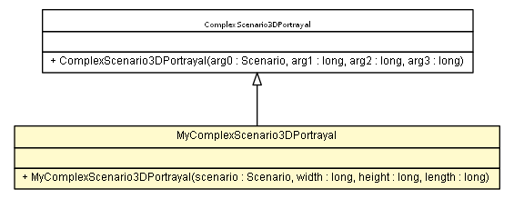

es.upm.dit.gsi.shanks.model.scenario.portrayal.test
Class MyComplexScenario3DPortrayal

java.lang.Object
 es.upm.dit.gsi.shanks.model.scenario.portrayal.ScenarioPortrayal
es.upm.dit.gsi.shanks.model.scenario.portrayal.Scenario3DPortrayal
es.upm.dit.gsi.shanks.model.scenario.portrayal.ComplexScenario3DPortrayal
es.upm.dit.gsi.shanks.model.scenario.portrayal.test.MyComplexScenario3DPortrayal
es.upm.dit.gsi.shanks.model.scenario.portrayal.ScenarioPortrayal
es.upm.dit.gsi.shanks.model.scenario.portrayal.Scenario3DPortrayal
es.upm.dit.gsi.shanks.model.scenario.portrayal.ComplexScenario3DPortrayal
es.upm.dit.gsi.shanks.model.scenario.portrayal.test.MyComplexScenario3DPortrayal
public class MyComplexScenario3DPortrayal
- extends ComplexScenario3DPortrayal
- Author:
- a.carrera
| Methods inherited from class es.upm.dit.gsi.shanks.model.scenario.portrayal.Scenario3DPortrayal |
addDisplay, addFrame, drawLink, getDisplay, getDisplays, getFrameList, getLinks, getPlacedDevices, removeDisplay, removeFrame, rescaleDisplay, scaleDisplay, setDisplayList, setFrameList, situateDevice |
| Methods inherited from class es.upm.dit.gsi.shanks.model.scenario.portrayal.ScenarioPortrayal |
addDataSerieToHistogram, addDataSerieToScatterPlot, addDataSerieToTimeChart, addDataToDataSerieInTimeChart, addHistogram, addPortrayal, addScatterPlot, addTimeChart, containsDataSerieInTimeChart, getDataSerieFromTimeChart, getHistogram, getHistograms, getPortrayals, getScatterPlot, getScatterPlots, getScenario, getTimeChart, getTimeCharts, removeDataSerieFromHistogram, removeDataSerieToTimeChart, removeHistogram, removePortrayal, removeScatterPlot, removeTimeChart, setHistogramRange, setPortrayals, updateDataSerieOnScatterPlot, updateDataSerieToHistogram, updateDataToDataSerieInTimeChart |
| Methods inherited from class java.lang.Object |
clone, equals, finalize, getClass, hashCode, notify, notifyAll, toString, wait, wait, wait |
MyComplexScenario3DPortrayal
public MyComplexScenario3DPortrayal(Scenario scenario,
long width,
long height,
long length)
throws ShanksException
- Parameters:
scenario - width - height - length -
- Throws:
DuplicatedPortrayalIDException
ScenarioNotFoundException
ShanksException
placeElements
public void placeElements()
- Specified by:
placeElements in class Scenario3DPortrayal
setupPortrayals
public void setupPortrayals()
- Specified by:
setupPortrayals in class ScenarioPortrayal
placeScenarios
public void placeScenarios()
throws ShanksException
- Specified by:
placeScenarios in class ComplexScenario3DPortrayal
- Throws:
ShanksException
addPortrayals
public void addPortrayals()
- Specified by:
addPortrayals in class Scenario3DPortrayal
Copyright © 2011-2013 Grupo de Sistemas Inteligentes - Universidad Politécnica de Madrid. All Rights Reserved.